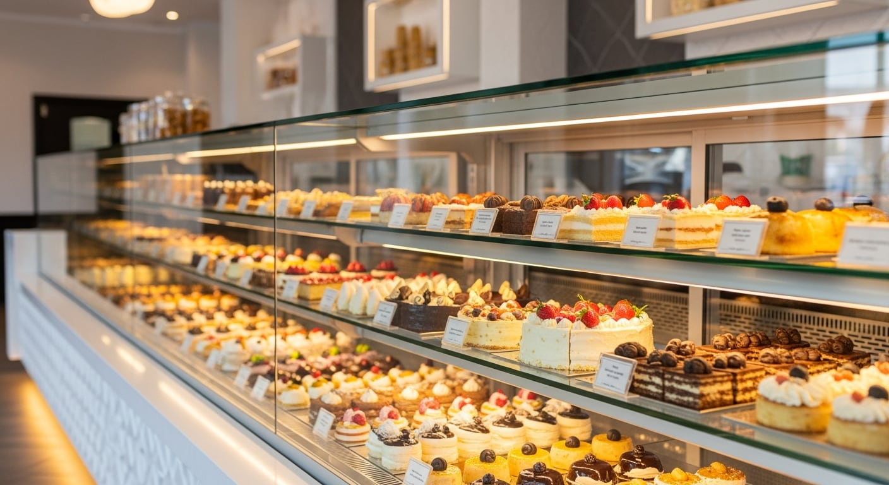
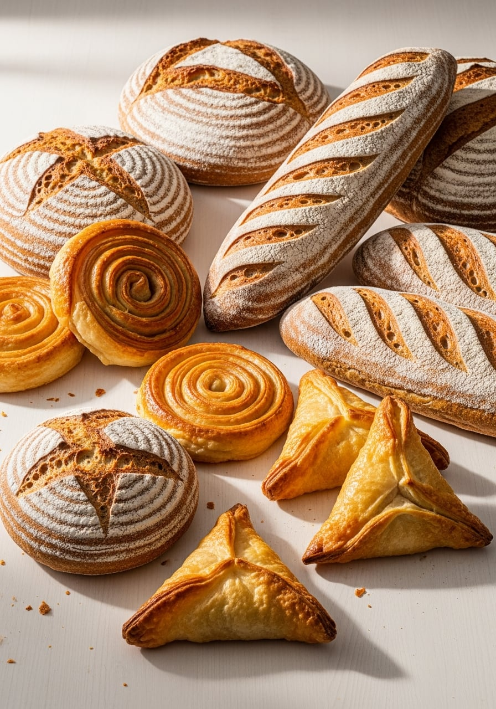
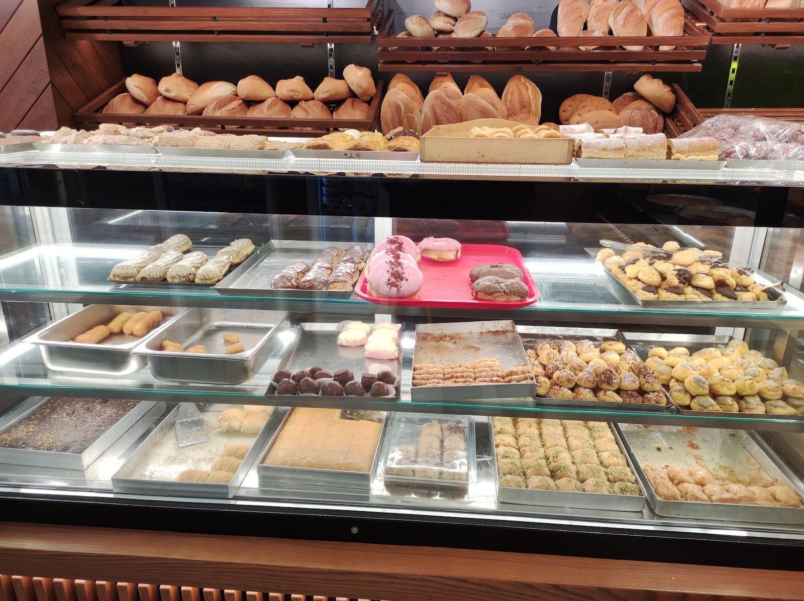
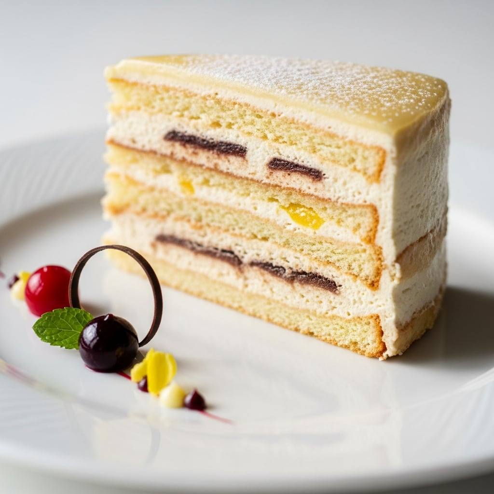
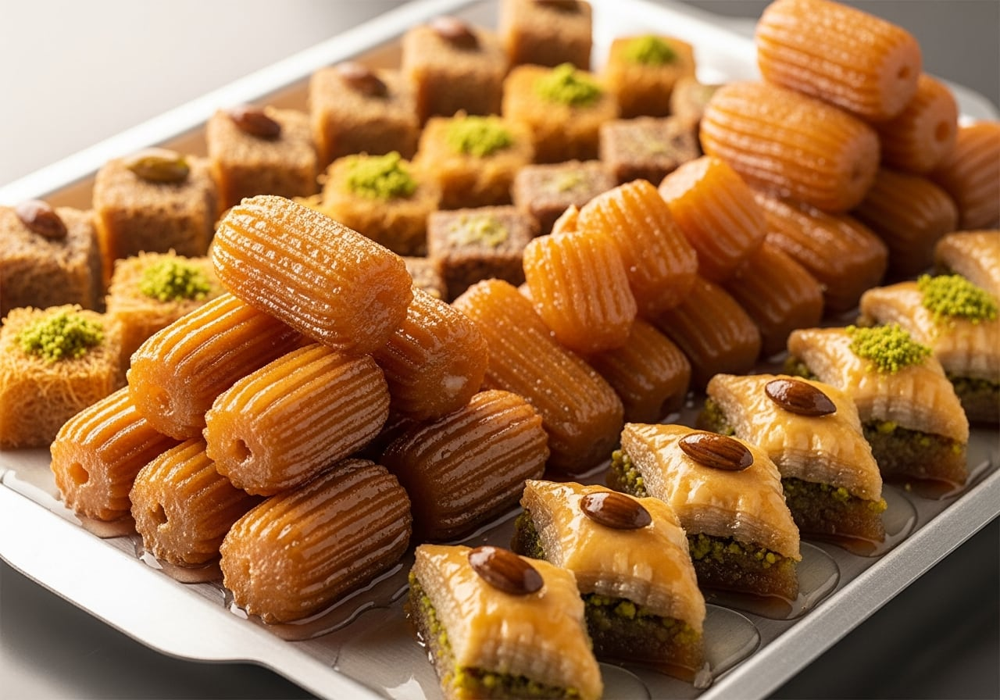
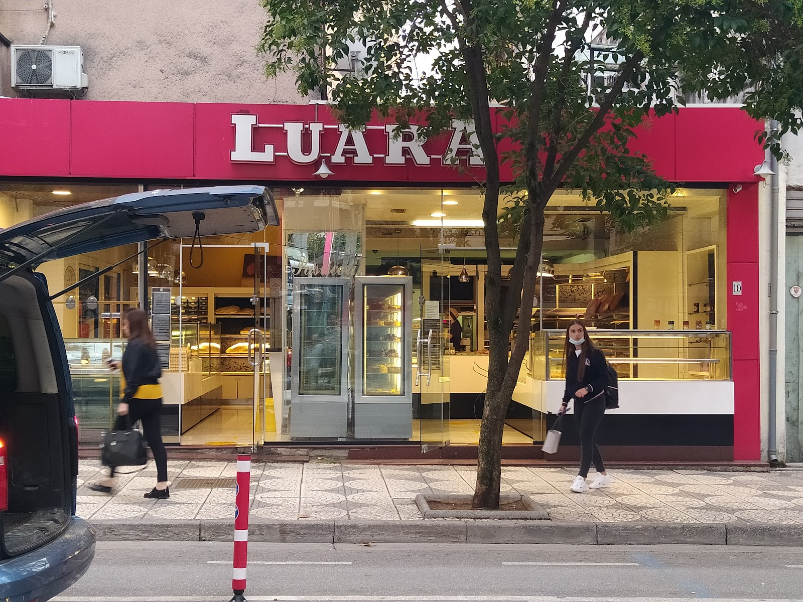
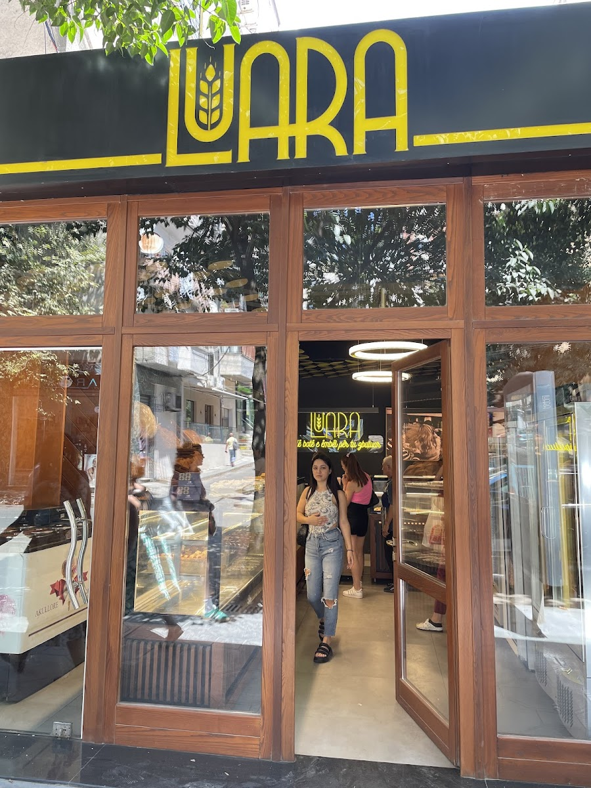

Myslym Shyri, Tiranë
Ëmbëlsi të bëra çdo mëngjes.
Pastiçeri në Myslym Shyri me tulumba, torta, byrek dhe bukë të freskët, të punuara me dorë çantë pas çante, ashtu si dikur.
Receta që i njohim
përmendësh.
Luara është pastiçeri lagjeje në zemër të Myslym Shyrit. Tulumbat, kadaifi dhe ëmbëlsirat tradicionale dalin nga e njëjta dorë çdo ditë, me të njëjtën recetë që klientët e kthejnë vit pas viti.
Bukë e freskët në mëngjes, byrek për drekë, torta për festat. Pak gjëra, të bëra mirë, pa shkurtime.
Çfarë bëjmë
Vitrina ndryshon sipas ditës, por këto i gjeni gjithmonë.
-
Tulumba & Ëmbëlsira Tradicionale
Tulumba, kadaif dhe ëmbëlsira osmane e shqiptare, me shurup të bërë në vend.
-
Torta & Ëmbëlsira
Torta për ditëlindje e festa, copa torte dhe ëmbëlsira të freskëta për çdo ditë.
-
Byrek & Pite
Byrek me djathë, spinaq e mish, i hapur me dorë dhe i pjekur i freskët.
-
Bukë e Freskët
Bukë e ngrohtë nga furra jonë çdo mëngjes, sa të mbërrini në punë.
-
Biskota & Brumëra
Biskota, kurabie dhe brumëra të vegjël, të mirë me kafen e mëngjesit.
-
Porosi për Evente
Torta dhe pjata ëmbëlsirash me porosi për dasma, pagëzime dhe festa.

Çdo ditë, nga
furra jonë.
Puna nis herët. Brumi ngjitet natën, buka piqet në mëngjes dhe tulumbat zhyten në shurup ndërsa vitrina mbushet copë pas cope. Asgjë nuk rri nga dje.
Kur kaloni, gjeni atë që sapo ka dalë, jo atë që ka mbetur.
Nga vitrina jonë




Porosit ëmbëlsirat
e radhës.
Na merr në telefon për një tortë me porosi ose kalo nga dyqani te Myslym Shyri. Për ditët e veçanta, lajmëro një ditë para.
- Adresa
- Rruga Myslym Shyri, Tiranë
- Telefon
- +355 69 406 6888
- @pasticeriluara
